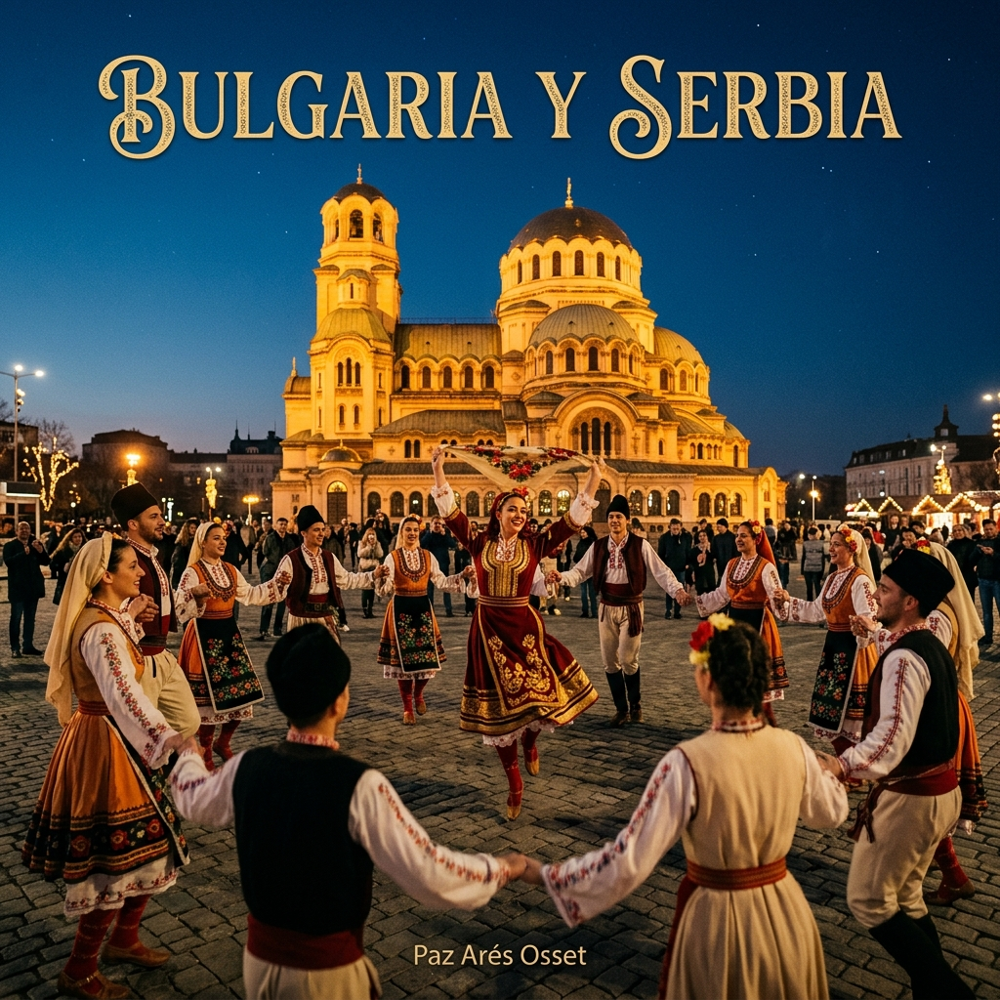
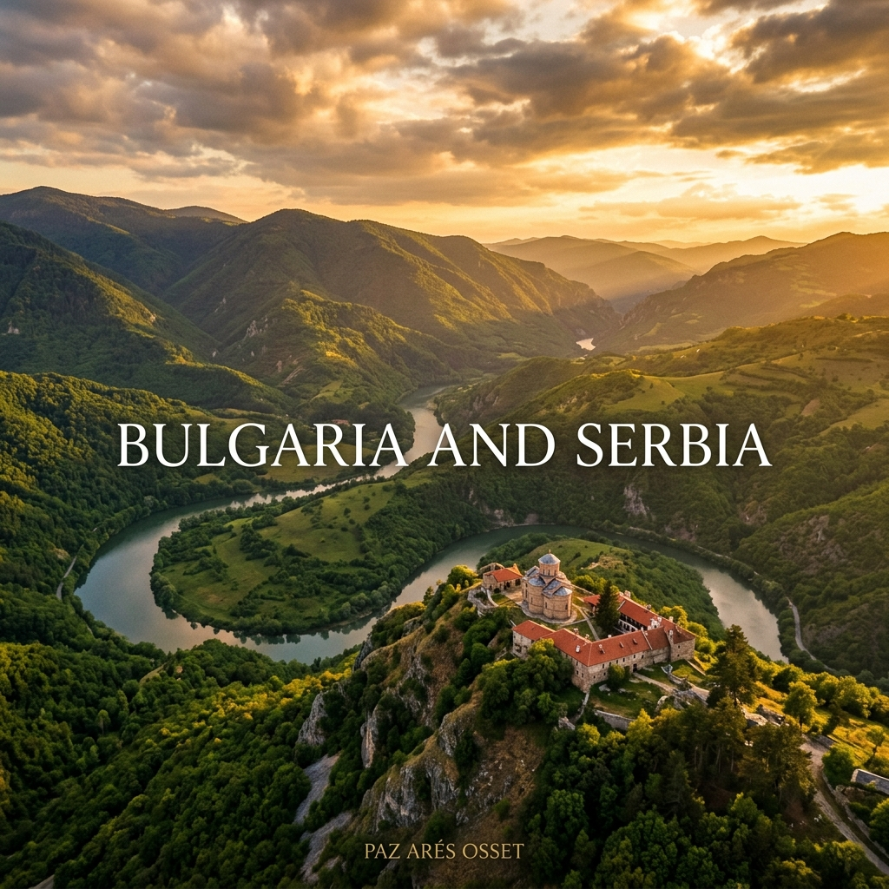
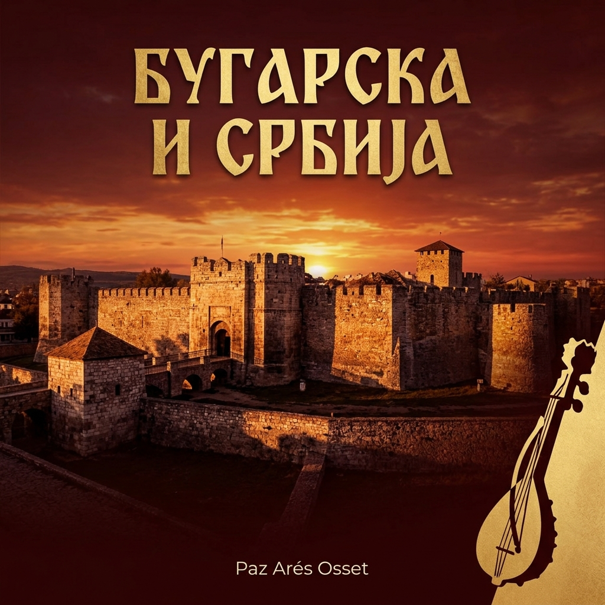
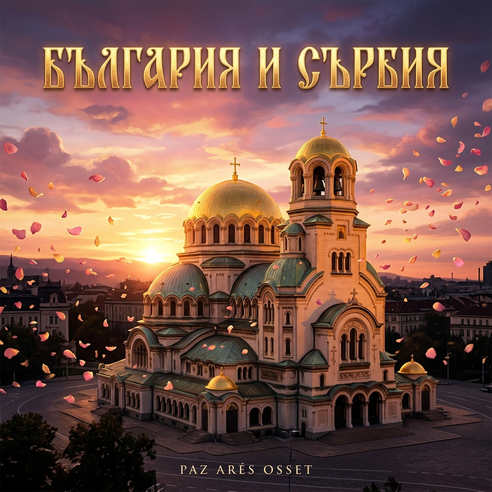

Bulgaria y Serbia
Bulgaria and Serbia
Бугарска и Србија
България и Сърбия
Болгария и Сербия
Болгарія і Сербія
Bulgaria e Serbia
保加利亚和塞尔维亚
بلغاريا وصربيا
Bulgarien und Serbien
Bulgarie et Serbie
ブルガリアとセルビア
Bulgária e Sérvia
En mis viajes por los Balcanes, el sol danza en montañas frondosas...
In my travels through the Balkans, the sun dances on lush mountains...
На мојим путовањима кроз Балкан, сунце плеше на бујним планинама...
В пътуванията ми през Балканите, слънцето танцува по буйните планини...
В моих путешествиях по Балканам солнце танцует на пышных горах...
У моїх подорожах по Балканах сонце танцює на пишних горах...
Nei miei viaggi attraverso i Balcani, il sole danza su montagne rigogliose...
在我穿越巴尔干半岛的旅程中，阳光在茂密的山脉上跳舞...
في رحلاتي عبر البلقان، يرقص الشمس على الجبال الخصبة...
Auf meinen Reisen durch den Balkan tanzt die Sonne auf üppigen Bergen...
Dans mes voyages à travers les Balkans, le soleil danse sur des montagnes luxuriantes...
バルカン半島を旅する中で、太陽は緑豊かな山々の上で踊る...
Nas minhas viagens pelos Balcãs, o sol dança em montanhas luxuriantes...
Bulgaria y Serbia
En mis viajes por los Balcanes
el sol danza en montañas frondosas
me encuentro envuelta en festivales
de melodías y danzas de siglos...
el sol danza en montañas frondosas
me encuentro envuelta en festivales
de melodías y danzas de siglos...
Bulgaria me regala belleza, Sofía.
Su catedral de Alexander Nevsky
un santuario de paz de luz dorada
caricia de frescos de santos…
Su catedral de Alexander Nevsky
un santuario de paz de luz dorada
caricia de frescos de santos…
Viaje a un encuentro multicultural...
Almas y espíritus grandes
en perfecta sintonía con el amor
Reflejan un mundo mejor.
Almas y espíritus grandes
en perfecta sintonía con el amor
Reflejan un mundo mejor.
En Serbia, Nis, danzando el kolo,
tejiendo círculos de fraternidad,
donde corazones laten al unísono.
En una coreografía eterna de unidad.
tejiendo círculos de fraternidad,
donde corazones laten al unísono.
En una coreografía eterna de unidad.
Siento la dulzura, la magia de la paz
en la sonrisa de niños y grandes,
en el eco sus risas que resuenan
en las danzas de noches estrelladas.
en la sonrisa de niños y grandes,
en el eco sus risas que resuenan
en las danzas de noches estrelladas.
Caleidoscopio de culturas y sueños,
me invitan a descubrir su alma,
en resonancia en mi alma,
la esencia de la paz y armonía.
me invitan a descubrir su alma,
en resonancia en mi alma,
la esencia de la paz y armonía.
Bulgaria and Serbia
In my travels through the Balkans
the sun dances on lush mountains
I find myself enveloped in festivals
of melodies and dances from centuries past...
the sun dances on lush mountains
I find myself enveloped in festivals
of melodies and dances from centuries past...
Bulgaria gifts me beauty, Sofia.
Its Alexander Nevsky Cathedral
a sanctuary of peace with golden light
a caress of frescoes of saints...
Its Alexander Nevsky Cathedral
a sanctuary of peace with golden light
a caress of frescoes of saints...
Journey to a multicultural encounter...
Great souls and spirits
in perfect harmony with love
reflect a better world.
Great souls and spirits
in perfect harmony with love
reflect a better world.
In Serbia, Nis, dancing the kolo,
weaving circles of fraternity,
where hearts beat in unison.
In an eternal choreography of unity.
weaving circles of fraternity,
where hearts beat in unison.
In an eternal choreography of unity.
I feel the sweetness, the magic of peace
in the smiles of children and adults,
in the echo of their laughter that resonates
in the dances of starry nights.
in the smiles of children and adults,
in the echo of their laughter that resonates
in the dances of starry nights.
A kaleidoscope of cultures and dreams,
invites me to discover its soul,
in resonance with my soul,
the essence of peace and harmony.
invites me to discover its soul,
in resonance with my soul,
the essence of peace and harmony.
Бугарска и Србија
На мојим путовањима кроз Балкан
сунце плеше на бујним планинама
налазим се обавијена фестивалима
мелодија и плесова столећа...
сунце плеше на бујним планинама
налазим се обавијена фестивалима
мелодија и плесова столећа...
Бугарска ми поклања лепоту, Софију.
Њена катедрала Александра Невског
светилиште мира златне светлости
милозвучје фресака светаца…
Њена катедрала Александра Невског
светилиште мира златне светлости
милозвучје фресака светаца…
Путовање ка мултикултуралном сусрету...
Велике душе и духови
у савршеном складу са љубављу
одражавају бољи свет.
Велике душе и духови
у савршеном складу са љубављу
одражавају бољи свет.
У Србији, Нишу, плешући коло,
преплићући кругове братства,
где срца куцају у унисону.
У вечној кореографији јединства.
преплићући кругове братства,
где срца куцају у унисону.
У вечној кореографији јединства.
Осећам слаткоћу, магију мира
у осмесима деце и одраслих,
у одјеку њиховог смеха који одзвања
у плесовима звезданих ноћи.
у осмесима деце и одраслих,
у одјеку њиховог смеха који одзвања
у плесовима звезданих ноћи.
Калеидоскоп култура и снова,
позива ме да откријем његову душу,
у резонанцији са мојом душом,
суштина мира и хармоније.
позива ме да откријем његову душу,
у резонанцији са мојом душом,
суштина мира и хармоније.
Болгария и Сербия
В моих путешествиях по Балканам
солнце танцует на пышных горах.
Я оказываюсь окутанной фестивалями
мелодий и танцами столетий...
солнце танцует на пышных горах.
Я оказываюсь окутанной фестивалями
мелодий и танцами столетий...
Болгария дарит мне красоту, Софию.
Её собор Александра Невского —
святилище мира в золотом свете,
ласковые фрески святых…
Её собор Александра Невского —
святилище мира в золотом свете,
ласковые фрески святых…
Путешествие к мультикультурной встрече...
Великие души и духи
в совершенной гармонии с любовью
отражают лучший мир.
Великие души и духи
в совершенной гармонии с любовью
отражают лучший мир.
В Сербии, Нише, танцуя коло,
сплетая круги братства,
где сердца бьются в унисон.
В вечной хореографии единства.
сплетая круги братства,
где сердца бьются в унисон.
В вечной хореографии единства.
Я чувствую сладость, магию мира
в улыбках детей и взрослых,
в эхо их смеха, что звучит
в танцах звёздных ночей.
в улыбках детей и взрослых,
в эхо их смеха, что звучит
в танцах звёздных ночей.
Калейдоскоп культур и мечтаний
приглашает меня открыть его душу,
в резонансе с моей душой —
сущность мира и гармонии.
приглашает меня открыть его душу,
в резонансе с моей душой —
сущность мира и гармонии.
Болгарія і Сербія
У моїх подорожах по Балканах
сонце танцює на пишних горах.
Я опиняюсь оповитою фестивалями
мелодій і танцями століть...
сонце танцює на пишних горах.
Я опиняюсь оповитою фестивалями
мелодій і танцями століть...
Болгарія дарує мені красу, Софію.
Її собор Олександра Невського —
святилище миру в золотому світлі,
ніжні фрески святих…
Її собор Олександра Невського —
святилище миру в золотому світлі,
ніжні фрески святих…
Подорож до мультикультурної зустрічі...
Великі душі та духи
у досконалій гармонії з любов'ю
відображають кращий світ.
Великі душі та духи
у досконалій гармонії з любов'ю
відображають кращий світ.
У Сербії, Ніші, танцюючи коло,
сплітаючи кола братерства,
де серця б'ються в унісон.
У вічній хореографії єдності.
сплітаючи кола братерства,
де серця б'ються в унісон.
У вічній хореографії єдності.
Я відчуваю солодкість, магію миру
в усмішках дітей та дорослих,
у відлунні їхнього сміху, що лунає
у танцях зоряних ночей.
в усмішках дітей та дорослих,
у відлунні їхнього сміху, що лунає
у танцях зоряних ночей.
Калейдоскоп культур і мрій
запрошує мене відкрити його душу,
у резонансі з моєю душею —
суттєвість миру та гармонії.
запрошує мене відкрити його душу,
у резонансі з моєю душею —
суттєвість миру та гармонії.
Bulgaria e Serbia
Nei miei viaggi attraverso i Balcani
il sole danza su montagne rigogliose
mi trovo avvolta in festival di melodie
e danze di secoli passati...
il sole danza su montagne rigogliose
mi trovo avvolta in festival di melodie
e danze di secoli passati...
La Bulgaria mi regala bellezza, Sofia.
La sua cattedrale di Alexander Nevsky
un santuario di pace con luce dorata
una carezza di affreschi di santi...
La sua cattedrale di Alexander Nevsky
un santuario di pace con luce dorata
una carezza di affreschi di santi...
Viaggio a un incontro multiculturale...
Grandi anime e spiriti
in perfetta armonia con l'amore
riflettono un mondo migliore.
Grandi anime e spiriti
in perfetta armonia con l'amore
riflettono un mondo migliore.
In Serbia, Nis, danzando il kolo,
tessendo cerchi di fraternità,
dove i cuori battono all'unisono.
In una coreografia eterna di unità.
tessendo cerchi di fraternità,
dove i cuori battono all'unisono.
In una coreografia eterna di unità.
Sento la dolcezza, la magia della pace
nel sorriso di bambini e adulti,
nell'eco delle loro risate che risuonano
nelle danze di notti stellate.
nel sorriso di bambini e adulti,
nell'eco delle loro risate che risuonano
nelle danze di notti stellate.
Kaleidoscopio di culture e sogni,
mi invita a descubrir la sua anima,
in risonanza con la mia anima,
l'essenza della pace e dell'armonia.
mi invita a descubrir la sua anima,
in risonanza con la mia anima,
l'essenza della pace e dell'armonia.
保加利亚和塞尔维亚
在我穿越巴尔干半岛的旅程中
阳光在茂密的山脉上跳舞
我被包围在世纪的旋律和舞蹈节日中...
阳光在茂密的山脉上跳舞
我被包围在世纪的旋律和舞蹈节日中...
保加利亚赠予我美丽，索非亚。
亚历山大·涅夫斯基大教堂
一个充满金色光芒的和平圣地
圣徒壁画的抚慰...
亚历山大·涅夫斯基大教堂
一个充满金色光芒的和平圣地
圣徒壁画的抚慰...
旅行到一个多元文化的相遇...
伟大的灵魂和精神
与爱完美和谐
反映出一个更好的世界。
伟大的灵魂和精神
与爱完美和谐
反映出一个更好的世界。
在塞尔维亚，尼什，跳着科洛舞
编织着友谊的圈子，
心脏齐声跳动。
在一个永恒的团结编舞中。
编织着友谊的圈子，
心脏齐声跳动。
在一个永恒的团结编舞中。
我感受到和平的甜美和魔力
在孩子和成年人的微笑中
在回响的笑声中
在星空下的舞蹈中。
在孩子和成年人的微笑中
在回响的笑声中
在星空下的舞蹈中。
文化和梦想的万花筒
邀请我发现它的灵魂
与我的灵魂共鸣
和平与和谐的本质。
邀请我发现它的灵魂
与我的灵魂共鸣
和平与和谐的本质。
بلغاريا وصربيا
في رحلاتي عبر البلقان
يرقص الشمس على الجبال الخصبة
أجد نفسي محاطة بمهرجانات
من الألحان والرقصات من القرون الماضية...
يرقص الشمس على الجبال الخصبة
أجد نفسي محاطة بمهرجانات
من الألحان والرقصات من القرون الماضية...
بلغاريا تهديني الجمال، صوفيا.
كاتدرائية ألكسندر نيفسكي
مزار للسلام والنور الذهبي
لمسة من لوحات القديسين...
كاتدرائية ألكسندر نيفسكي
مزار للسلام والنور الذهبي
لمسة من لوحات القديسين...
رحلة إلى لقاء متعدد الثقافات...
أرواح عظيمة
في تناغم تام مع الحب
تعكس عالماً أفضل.
أرواح عظيمة
في تناغم تام مع الحب
تعكس عالماً أفضل.
في صربيا، نيش، راقصة الكولو،
نسج دوائر من الأخوة،
حيث تنبض القلوب بانسجام.
في رقصة دائمة للوحدة.
نسج دوائر من الأخوة،
حيث تنبض القلوب بانسجام.
في رقصة دائمة للوحدة.
أشعر بحلاوة وسحر السلام
في ابتسامات الأطفال والكبار،
في صدى ضحكاتهم التي تتردد
في رقصات الليالي المرصعة بالنجوم.
في ابتسامات الأطفال والكبار،
في صدى ضحكاتهم التي تتردد
في رقصات الليالي المرصعة بالنجوم.
كاليدوسكوب من الثقافات والأحلام،
يدعوني لاكتشاف روحه،
في تناغم مع روحي،
جوهر السلام والوئام.
يدعوني لاكتشاف روحه،
في تناغم مع روحي،
جوهر السلام والوئام.
Bulgarien und Serbien
Auf meinen Reisen durch den Balkan
tanzt die Sonne auf üppigen Bergen.
Ich finde mich umhüllt von Festivals
der Melodien und Tänze der Jahrhunderte...
tanzt die Sonne auf üppigen Bergen.
Ich finde mich umhüllt von Festivals
der Melodien und Tänze der Jahrhunderte...
Bulgarien schenkt mir Schönheit, Sofia.
Die Alexander-Newski-Kathedrale —
ein Heiligtum des Friedens im goldenen Licht,
eine Liebkosung von Fresken der Heiligen...
Die Alexander-Newski-Kathedrale —
ein Heiligtum des Friedens im goldenen Licht,
eine Liebkosung von Fresken der Heiligen...
Reise zu einer multikulturellen Begegnung...
Große Seelen und Geister
in perfekter Harmonie mit der Liebe
spiegeln eine bessere Welt wider.
Große Seelen und Geister
in perfekter Harmonie mit der Liebe
spiegeln eine bessere Welt wider.
In Serbien, Niš, den Kolo tanzend,
Kreise der Brüderlichkeit webend,
wo Herzen im Einklang schlagen.
In einer ewigen Choreographie der Einheit.
Kreise der Brüderlichkeit webend,
wo Herzen im Einklang schlagen.
In einer ewigen Choreographie der Einheit.
Ich spüre die Süße, die Magie des Friedens
im Lächeln von Kindern und Erwachsenen,
im Echo ihres Lachens, das widerhallt
in den Tänzen der Sternennächte.
im Lächeln von Kindern und Erwachsenen,
im Echo ihres Lachens, das widerhallt
in den Tänzen der Sternennächte.
Ein Kaleidoskop der Kulturen und Träume
lädt mich ein, seine Seele zu entdecken,
in Resonanz mit meiner Seele —
das Wesen des Friedens und der Harmonie.
lädt mich ein, seine Seele zu entdecken,
in Resonanz mit meiner Seele —
das Wesen des Friedens und der Harmonie.
Bulgarie et Serbie
Dans mes voyages à travers les Balkans
le soleil danse sur des montagnes luxuriantes.
Je me retrouve enveloppée de festivals
de mélodies et danses des siècles...
le soleil danse sur des montagnes luxuriantes.
Je me retrouve enveloppée de festivals
de mélodies et danses des siècles...
La Bulgarie m'offre la beauté, Sofia.
Sa cathédrale Alexandre Nevski —
un sanctuaire de paix dans la lumière dorée,
une caresse de fresques de saints...
Sa cathédrale Alexandre Nevski —
un sanctuaire de paix dans la lumière dorée,
une caresse de fresques de saints...
Voyage vers une rencontre multiculturelle...
De grandes âmes et esprits
en parfaite harmonie avec l'amour
reflètent un monde meilleur.
De grandes âmes et esprits
en parfaite harmonie avec l'amour
reflètent un monde meilleur.
En Serbie, Niš, dansant le kolo,
tissant des cercles de fraternité,
où les cœurs battent à l'unisson.
Dans une chorégraphie éternelle d'unité.
tissant des cercles de fraternité,
où les cœurs battent à l'unisson.
Dans une chorégraphie éternelle d'unité.
Je ressens la douceur, la magie de la paix
dans les sourires des enfants et des grands,
dans l'écho de leurs rires qui résonnent
dans les danses des nuits étoilées.
dans les sourires des enfants et des grands,
dans l'écho de leurs rires qui résonnent
dans les danses des nuits étoilées.
Un kaléidoscope de cultures et de rêves
m'invite à découvrir son âme,
en résonance avec mon âme —
l'essence de la paix et de l'harmonie.
m'invite à découvrir son âme,
en résonance avec mon âme —
l'essence de la paix et de l'harmonie.
ブルガリアとセルビア
バルカン半島を旅する中で
太陽は緑豊かな山々の上で踊る
私は何世紀にもわたる旋律と踊りの祭典に包まれている...
太陽は緑豊かな山々の上で踊る
私は何世紀にもわたる旋律と踊りの祭典に包まれている...
ブルガリアが私に美を贈る、ソフィア。
アレクサンドル・ネフスキー大聖堂
黄金の光に満ちた平和の聖地
聖人のフレスコ画の優しさ...
アレクサンドル・ネフスキー大聖堂
黄金の光に満ちた平和の聖地
聖人のフレスコ画の優しさ...
多文化の出会いへの旅...
偉大な魂と精神
愛と完璧な調和の中で
より良い世界を映し出す。
偉大な魂と精神
愛と完璧な調和の中で
より良い世界を映し出す。
セルビア、尼什で、コロを踊りながら
友愛の輪を編み、
心臓が一斉に鼓動する場所で。
統一の永遠の振付の中で。
友愛の輪を編み、
心臓が一斉に鼓動する場所で。
統一の永遠の振付の中で。
平和の甘さと魔法を感じる
子どもたちと大人たちの微笑みの中で
星空の下の踊りの中で響く
彼らの笑い声のこだまの中で。
子どもたちと大人たちの微笑みの中で
星空の下の踊りの中で響く
彼らの笑い声のこだまの中で。
文化と夢の万華鏡
その魂を発見するよう私を招く
私の魂と共鳴しながら —
平和と調和の本質。
その魂を発見するよう私を招く
私の魂と共鳴しながら —
平和と調和の本質。
Bulgária e Sérvia
Nas minhas viagens pelos Balcãs
o sol dança em montanhas luxuriantes.
Encontro-me envolvida em festivais
de melodias e danças de séculos...
o sol dança em montanhas luxuriantes.
Encontro-me envolvida em festivais
de melodias e danças de séculos...
A Bulgária presenteia-me com beleza, Sófia.
A sua catedral de Alexandre Nevski —
um santuário de paz com luz dourada,
uma carícia de frescos de santos...
A sua catedral de Alexandre Nevski —
um santuário de paz com luz dourada,
uma carícia de frescos de santos...
Viagem ao encontro multicultural...
Grandes almas e espíritos
em perfeita harmonia com o amor
refletem um mundo melhor.
Grandes almas e espíritos
em perfeita harmonia com o amor
refletem um mundo melhor.
Na Sérvia, Niš, dançando o kolo,
tecendo círculos de fraternidade,
onde corações batem em uníssono.
Numa coreografia eterna de unidade.
tecendo círculos de fraternidade,
onde corações batem em uníssono.
Numa coreografia eterna de unidade.
Sinto a doçura, la magia da paz
nos sorrisos de crianças e adultos,
no eco das suas gargalhadas que ressoam
nas danças das noites estreladas.
nos sorrisos de crianças e adultos,
no eco das suas gargalhadas que ressoam
nas danças das noites estreladas.
Um caleidoscópio de culturas e sonhos
convida-me a descobrir a sua alma,
em ressonância com a minha alma —
a essência da paz e da harmonia.
convida-me a descobrir a sua alma,
em ressonância com a minha alma —
a essência da paz e da harmonia.
България и Сърбия
В пътуванията ми през Балканите
слънцето танцува по буйните планини.
Намирам се обвита във фестивали
на мелодии и танци от векове...
слънцето танцува по буйните планини.
Намирам се обвита във фестивали
на мелодии и танци от векове...
България ми подарява красота, София.
Катедралата Александър Невски —
светилище на мира в златна светлина,
нежна прегръдка от стенописи на светци…
Катедралата Александър Невски —
светилище на мира в златна светлина,
нежна прегръдка от стенописи на светци…
Пътуване към мултикултурна среща...
Велики души и духове,
в съвършена хармония с любовта,
отразяват един по-добър свят.
Велики души и духове,
в съвършена хармония с любовта,
отразяват един по-добър свят.
В Сърбия, Ниш, танцувайки коло,
преплитайки кръгове на братство,
където сърцата бият в унисон.
Във вечна хореография на единството.
преплитайки кръгове на братство,
където сърцата бият в унисон.
Във вечна хореография на единството.
Чувствам сладостта, магията на мира,
в усмивките на деца и възрастни,
в ехото на смеха им, който отеква
в танците на звездните нощи.
в усмивките на деца и възрастни,
в ехото на смеха им, който отеква
в танците на звездните нощи.
Калейдоскоп от култури и мечти,
ме кани да открия душата му,
в резонанс с моята душа —
същността на мира и хармонията.
ме кани да открия душата му,
в резонанс с моята душа —
същността на мира и хармонията.
Música — Bulgaria y Serbia Music — Bulgaria and Serbia Музика — Бугарска и Србија Музика — България и Сърбия Музыка — Болгария и Сербия Музика — Болгарія і Сербія Musica — Bulgaria e Serbia 音乐 — 保加利亚和塞尔维亚 موسيقى — بلغاريا وصربيا Musik — Bulgarien und Serbien Musique — Bulgarie et Serbie 音楽 — ブルガリアとセルビア Música — Bulgária e Sérvia

Disco en Castellano
Spanish Album
Шпански диск
Испански диск
Испанский диск
Іспанський диск
Disco in Spagnolo
西班牙语专辑
ألبوم بالإسبانية
Spanisches Album
Album en Espagnol
スペイン語アルバム
Álbum em Espanhol
Paz Arés Osset
Spotify

Disco en Inglés
English Album
Енглески диск
Английски диск
Английский диск
Англійський диск
Disco in Inglese
英语专辑
ألبوم بالإنجليزية
Englisches Album
Album en Anglais
英語アルバム
Álbum em Inglês
Paz Arés Osset
Spotify

Disco en Serbio
Serbian Album
Српски диск
Сръбски диск
Сербский диск
Сербський диск
Disco in Serbo
塞尔维亚语专辑
ألبوم بالصربية
Serbisches Album
Album en Serbe
セルビア語アルバム
Álbum em Sérvio
Paz Arés Osset
Spotify

Disco en Búlgaro
Bulgarian Album
Бугарски диск
Български диск
Болгарский диск
Болгарський диск
Disco in Bulgaro
保加利亚语专辑
ألبوم بالبلغارية
Bulgarisches Album
Album en Bulgare
ブルガリア語アルバム
Álbum em Búlgaro
Paz Arés Osset
Spotify